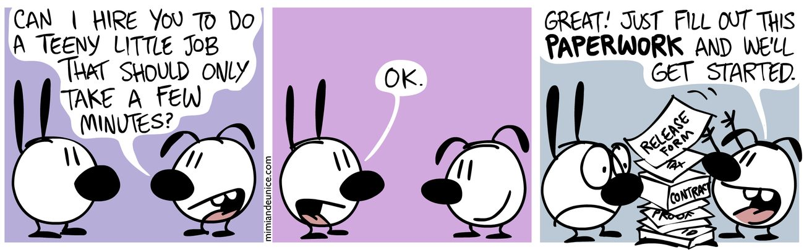

Why your small business runs out of cash (and the forecast that prevents it)
Profitable on paper, empty in the bank: the five patterns that drain small business cash: and the forecast that shows them coming.
Profitable on paper. Empty in the bank. It's the most common way small businesses die: and it's almost always one of five patterns you can see coming a year ahead.

Profit is an opinion. Cash is a fact.
Ask your accountant how the business is doing and they'll show you a profit and loss statement. Ask your bank and it shows you a number. Those two answers disagree constantly, and the bank is the one that decides whether you make payroll.
The gap between them is timing, and timing is where small businesses get killed:
- You pay for materials and labor now.
- You invoice net 30 (which really means net 45).
- The P&L records the revenue the day you invoice.
- Your bank account doesn't care what the P&L says.
A business can be deeply profitable and still go under, because rent, wages and suppliers don't accept "profit" — they accept cash. Accountants even have a name for the gap: the cash conversion cycle. You don't need the jargon. You need to see the tight months before they arrive.
The five patterns that empty the account
After you've watched a few dozen small businesses' numbers side by side, the surprises stop surprising you. Cash crunches come in five shapes:
1. The growth trap. The most counterintuitive one: you win. New contract, bigger client, more volume — and suddenly you can't make payroll, because you're funding the inputs of the new work 45 days before the payment lands. Fast-growing businesses fail from success they can't finance. Every dollar of growth on net-30 terms is a dollar you lend your customer out of your own account first.
2. The seasonal squeeze. Landscapers in February. Retailers in September (buying holiday stock before holiday sales). Accountants in May. The pattern is predictable to the week — which means the pain is entirely avoidable, if you look at the forecast instead of last month's bank statement.
3. The big client. When one customer is 40%+ of revenue, your cashflow is their payment schedule. They slip a payment by three weeks and you slip payroll. You can't always avoid concentration, but you can see exactly which months it turns dangerous — and negotiate terms or build the buffer before it does.
4. The slow-pay drift. Nobody decides to let receivables slide. A 30-day average quietly becomes 38, then 47. Each week of drift is a week of your own money sitting in someone else's account. A forecast that uses actual payment behavior (not the terms you wish were true) exposes the drift the month it starts instead of the quarter it hurts.
5. The tax surprise. The money was in the account, so it felt like yours. Then the quarterly or annual bill lands on a month that was already tight. Profitable businesses get blindsided by this every year, which is embarrassing, because the amount and the due date are both known in advance.
The forecast is smaller than you think
Invoices, clients, expenses, quotes and the 12-month forecast — linked and ready for your numbers. One-time price, lifetime updates, all sales final.
Command Center, $49 → Start free"What, like a budget?" No — budgets are about discipline, and they're mostly fiction by March. A cashflow forecast is just arithmetic on a calendar:
- Opening balance for this month (from your bank, today — no guessing).
- Money in, per month, by source — use realistic dates, not invoice dates.
- Money out, per month: rent, wages, suppliers, loan payments, tax set-aside.
- Closing balance = opening + in − out. That closing number becomes next month's opening.
Twelve rows of that and you have the entire machine. The number that matters is the lowest closing balance in the next 12 months. If it's comfortably positive, you sleep. If it dips near zero in, say, March and August, you now know two things nobody at the bank will tell you: when it gets tight and how much shortfall to cover — which turns a crisis into a to-do list: move a payment, accelerate one invoice, arrange a small credit line three months early.

The ten-minute weekly routine

A forecast only works if it reflects reality, so the upkeep matters more than the setup. Once a week, after invoices go out:
1. Update actual balances from the bank.
2. Slide the unpaid invoices to when you realistically expect them.
3. Add anything new and big — equipment, hires, that trade show.
4. Glance at the lowest point of the next 12 months. That's your number.
Fifteen minutes. It's the difference between driving with a windshield and driving by the rear-view mirror.
Start with the free version
Everything above — the 12-month grid, realistic payment dating, the red-flag tight months, the dashboard — is the 12-Month Cashflow Forecaster, and the lite version is free here. No signup, no card, download and go. If you later want invoices, clients, expenses and cashflow wired together, the full system is on the same page.
Forecasting tool, not accounting or tax advice. Works in Excel and Google Sheets.
Invoices, expenses, clients, quotes and a 12-month cashflow forecast — linked in one workbook. One-time price, lifetime updates, all sales final.
Buy the Command Center — $49 → Start with the free forecaster